This document is in progress.
You can participate by creating issues in related GitHub repo and submit pull requests - it'll be greatly appreciated!
Bitcoin Post-Quantum is a bit different than Bitcoin.
Instead of multiple addresses, the best practice is to reuse a single address.
In most cases change will return to the same address you have issued the transaction from. However you are able to provide any different change address.
In contrast with Bitcoin a quantum-safe address can be used a limited number of times.
Wallet software will warn you if you have used a significant amount of available signatures and when you have number of signatures left enough only to securely transfer money to a new BPQ address.
When creating a quantum-safe address you can choose between 3 types of XMSS tree:
| Name | Amount of signatures | Time of address creation |
|---|---|---|
| XMSS-10 | 1024 | 1-2 seconds |
| XMSS-16 | 65536 | 1-2 minutes |
| XMSS-20 | 1048576 | 10-20 minutes |
Address type should be chosen according to the purpose of use. Thus, quickly generated addresses are more convenient for personal use. For automatic services, it is recommended to use the XMSS-20.
Get ElectrumPQ light wallet source code here
Run ./electrumpq or ./electrumpq --testnet for the Testnet and use wizard to create a new wallet:
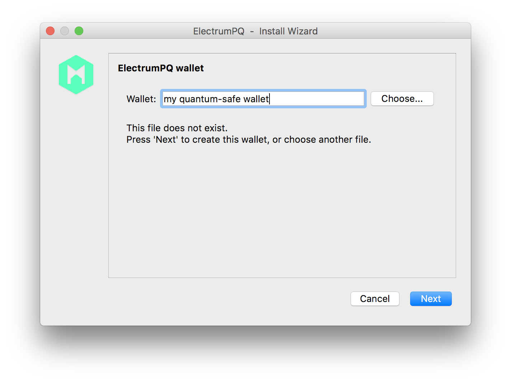
Choose "Standard wallet":
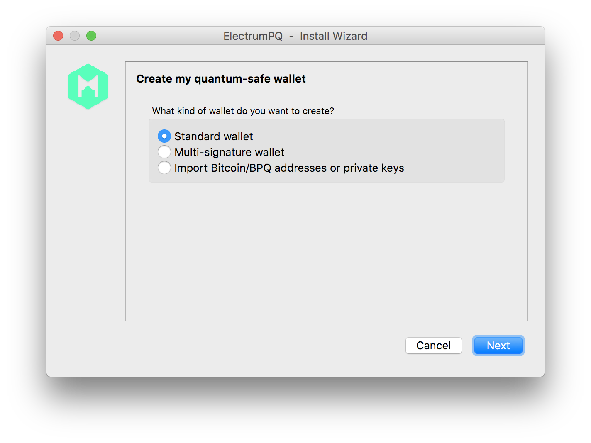
Choose "Create a new seed":
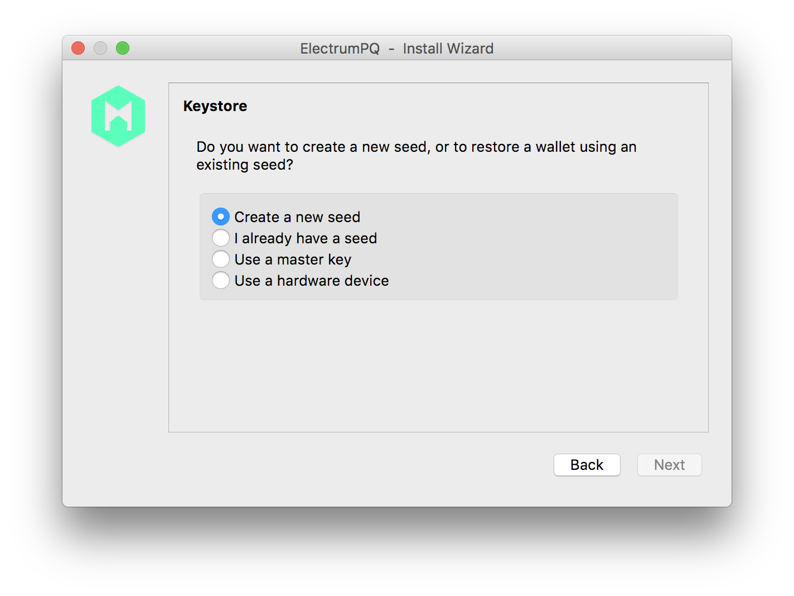
Choose a type of XMSS address:
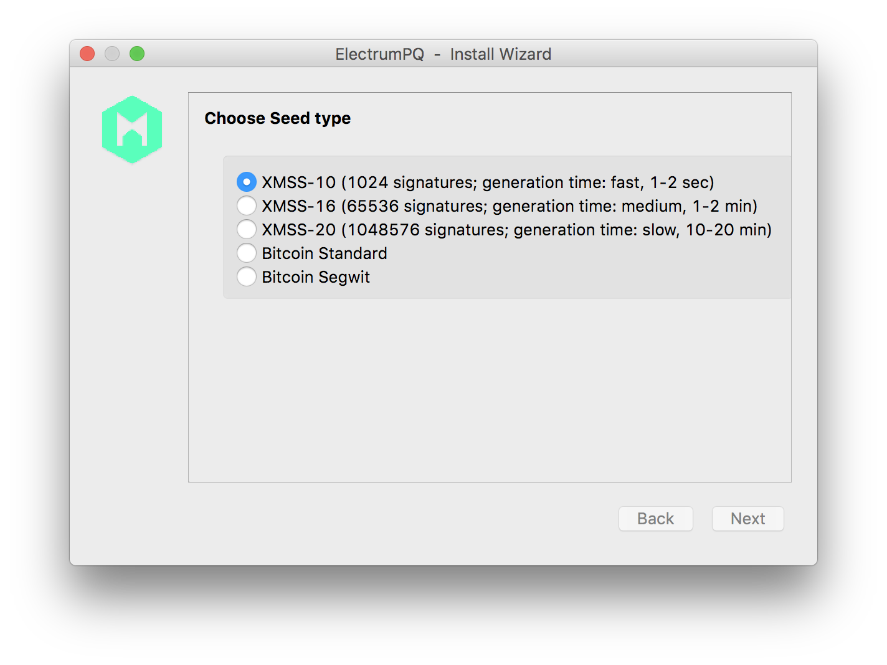
Save your 24-words seed to a safe place:
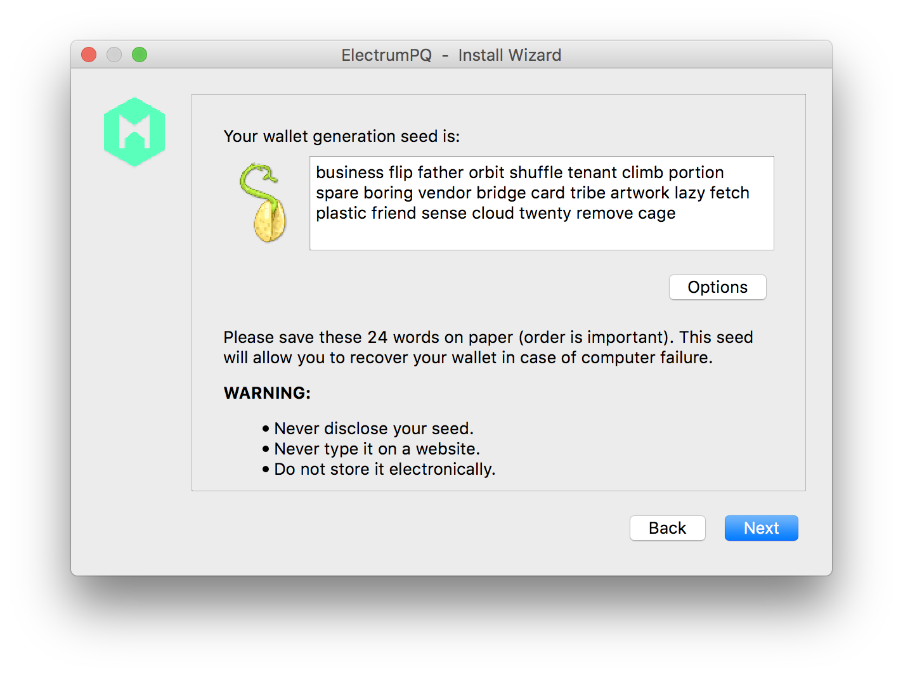
Enter your saved seed:
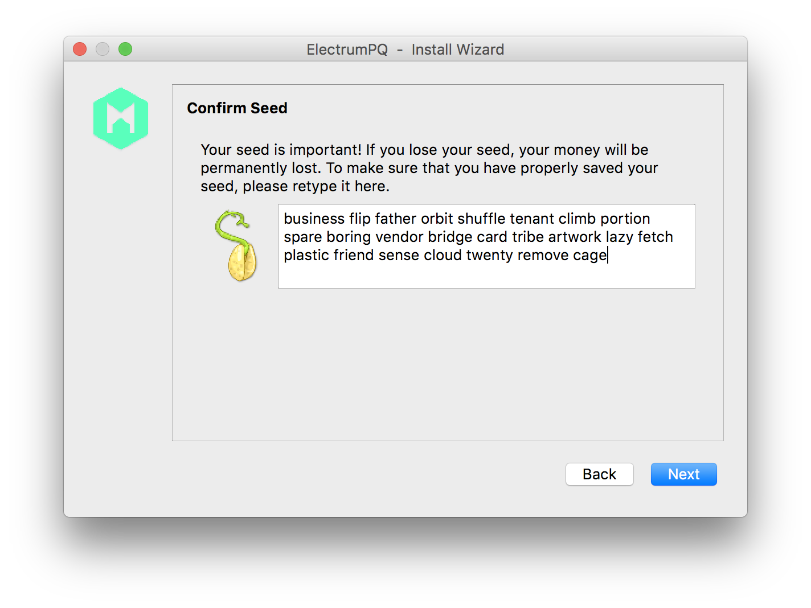
Choose a strong password to encrypt your wallet with symmetric encryption AES-256 (it is quantum-safe):
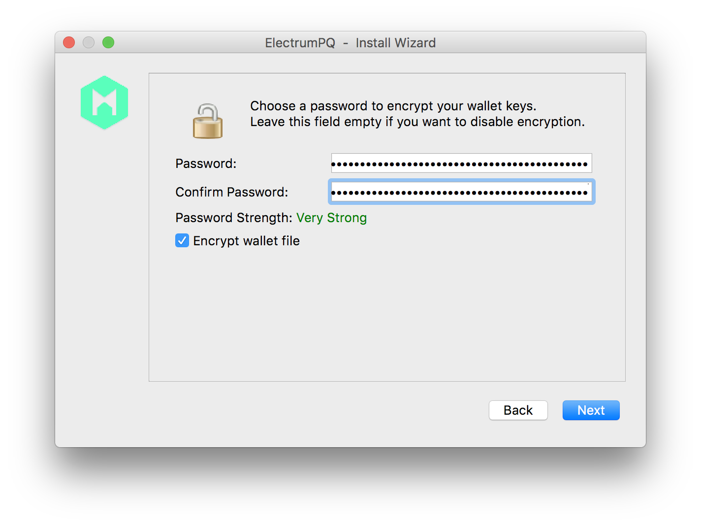
This is it:
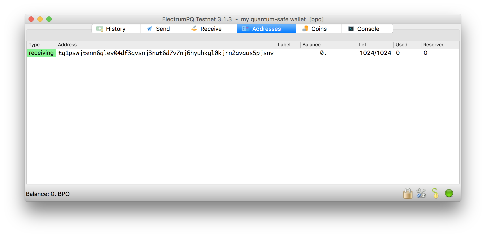
Mainnet addresses begin with "pq1", Testnet addresses begin with "tq1". Column "Left" shows how many available signatures you have. Column "Used" shows how many signatures you have already used. Colum "Reserved" shows how many unspent transactions outputs (a.k.a "Coins") you have.
For the security reasons, it is strongly recommended that you transfer the money from the keys in the Bitcoin blockchain to addresses that are managed by other keys before you enter the old ECDSA keys into the wallet program.
If you have balance in Bitcoin blockchain before the block height 555000 (or 1445550 in Testnet), you have the same balance in the Bitcoin Post-Quantum blockchain.
To protect them from a quantum attack and start using them in the Bitcoin Post-Quantum blockchain, create a new wallet:
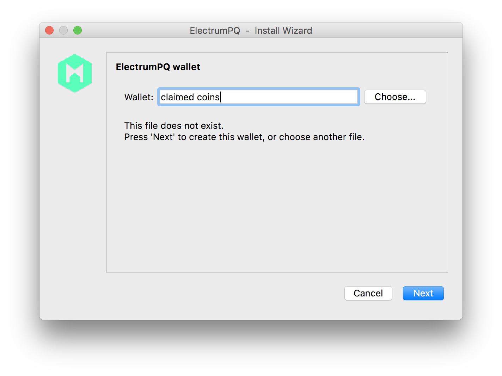
Choose "Import Bitcoin/BPQ addresses or private keys":
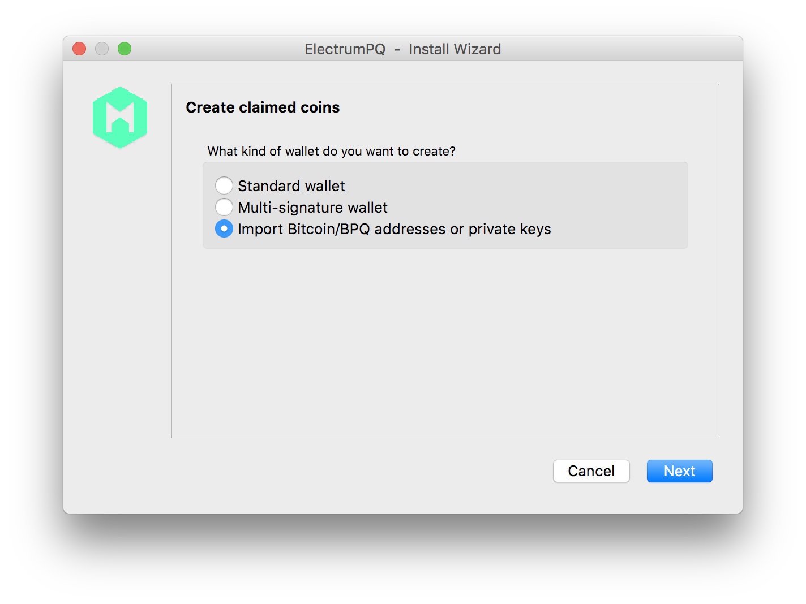
Paste your private keys:
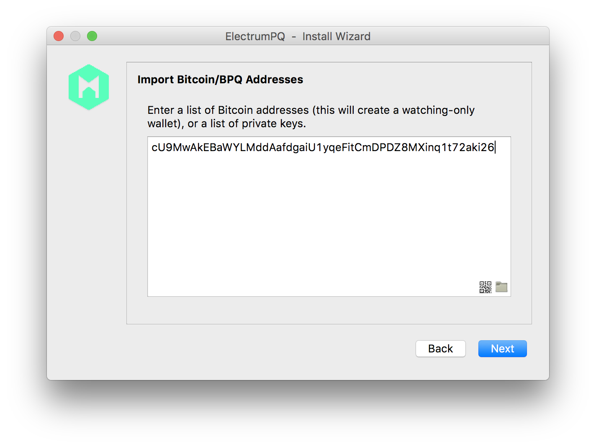
Skip encryption, as you will need this wallet just once:
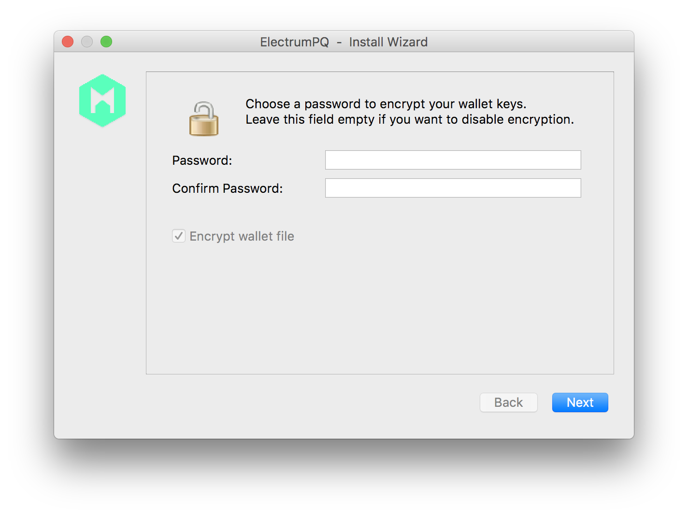
Make sure your balance is present:
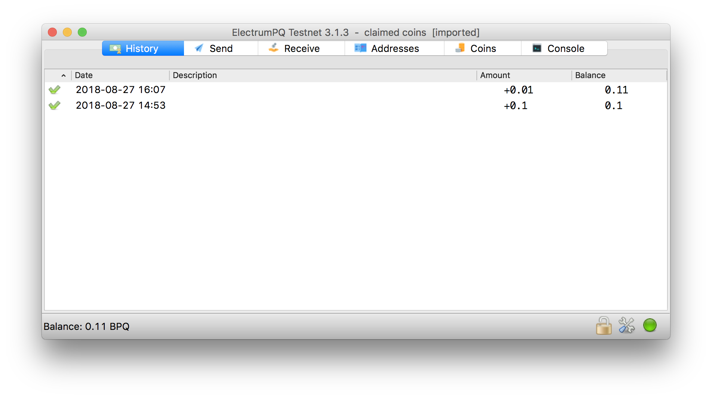
Send all your claimed coins to your previously created quantum-safe address (press "Max", then "Send"):
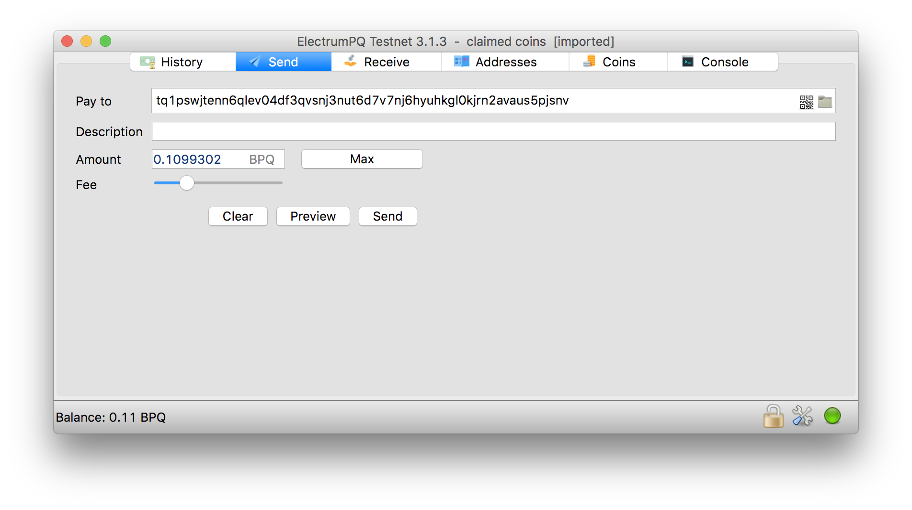
After that coins are protected in your quantum-safe address:
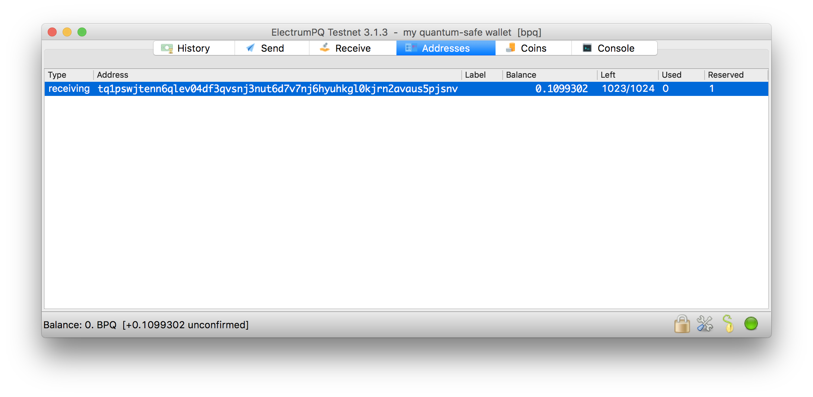
Miner source code and run instructions here
BPQ source code can be found here
How to start full node with Docker (install Docker) in few clicks:
git clone https://github.com/bitcoinpostquantum/docker-bpq.git
cd docker-bpq./create./run_as_interactivebpqd -printtoconsole -testnet=1sudo docker pssudo docker exec -it ContainerHandle /bin/bashbpq-cli -testnet=1 getblockcountsudo docker stop ContainerHandle
ElectrumX server source code repo
bpqcrypto lib source code is here